Australia(VK6)の6m
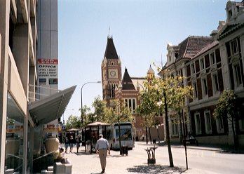
Perth West Australia
30.Oct-05.Nov.2002
|
◎ VK6の6mマンとのEyeball QSO
2002年10月30日から11月5日の日程で、西オーストラリアのパース(Parth)を訪れた。
初のオーストラリア訪問となる今回の目的は、11月1日-3日の「SEANET 2002 Convention」への参加だった。 |

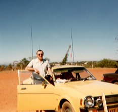
20数年前にCQ誌の6mコラムで紹介した時の切抜きを持って会いに来てくれたVK6RO・Grahamと
右の写真は初QSO(1981年)当時のVK6RO
Perth Hamfest 2002 でEyeball QSO

Perth Hamfest 2002の会場で会ったVK6の6mアクティブ局
左からVK6RO.VK6WD.JA1RJU(VK6KK).VK6JJ.VK6HK
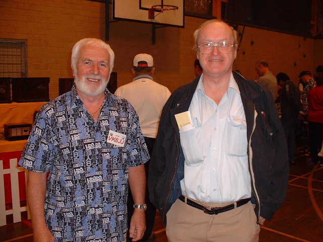
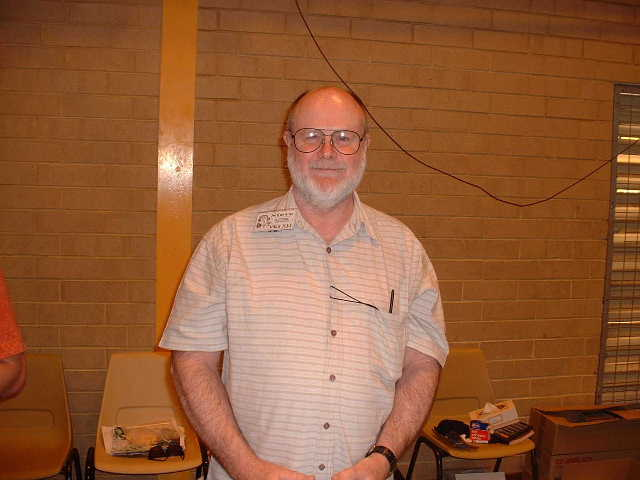
(左)VK6JJ・JohnとVK6RO・Graham／Perthでの初QSO局はVK6SJJ・Steve
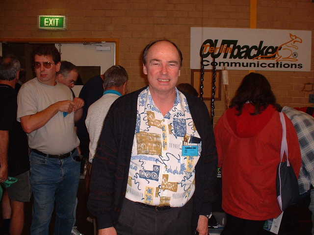
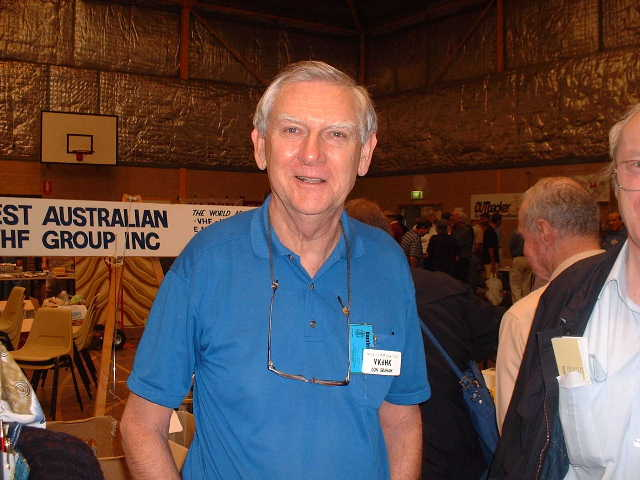
VK6WD・Wayn(左)／VK6HK・Don(右)
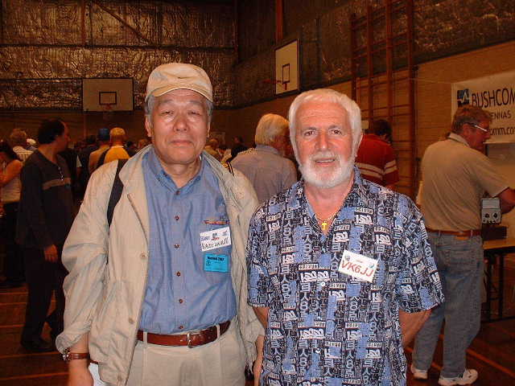
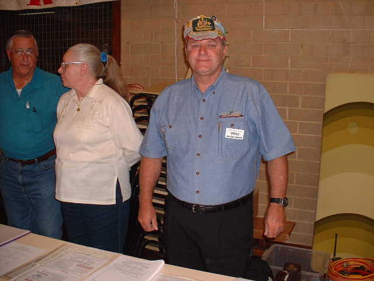
VK6JJ(右)とJA1RJU(VK6KK)／Hamfest 2002の会場でアワードの資料を展示していたVK6LC
|
◎ Australiaの免許事情=VK6KKの誕生=
オーストラリアでは所定の書類を添えて申請すれば、外国人に対してもアマチュア局の免許は与えられる。 |
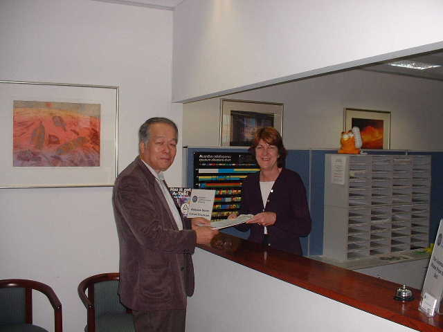
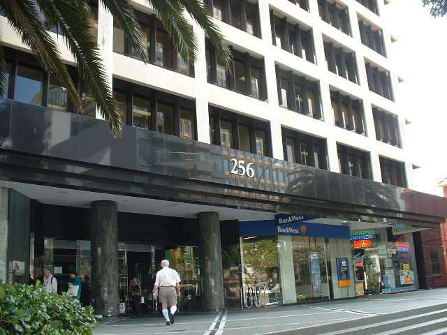
担当者のLeonie brewer嬢からVK6KKの免許を受け取るJA1RJU／ACAのあるPerth市の256ビル

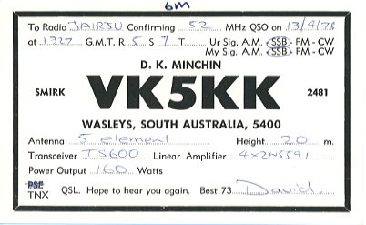
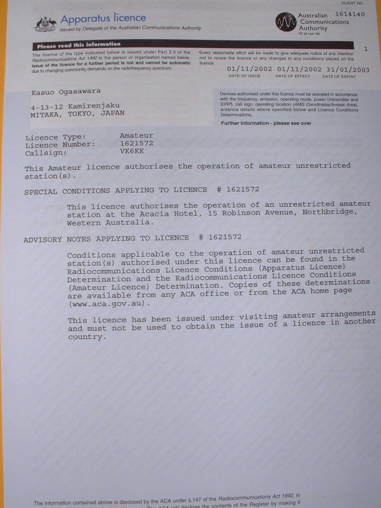
"今まで6mでVK6KKを聞いた事は無いがVK6IPがKKのハンドルを使っているぞ"とVK6ROは笑っていた。
|
◎ Acacia Hotelでの運用
Acacia HotelにはSEANET2002が開催されていた期間、VI6SWA(Seanet West Australia)が設置された。
使用RIGは、KENWOODのTS570にバーチカルと2mレピーター用にYAESUのFT-90+GPと言った簡単なものだった。 |
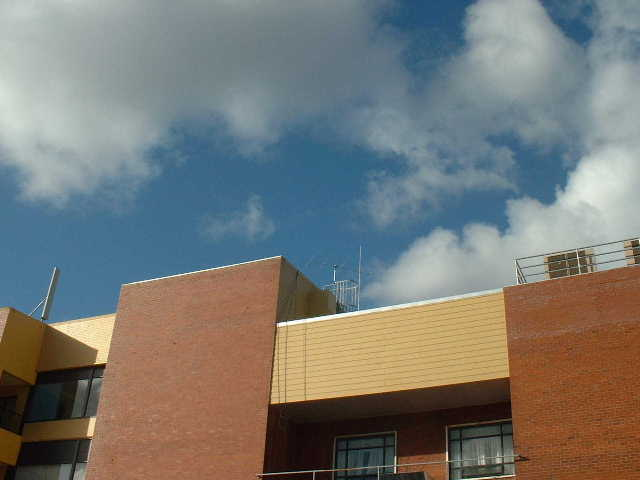
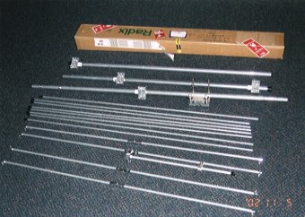
移動に便利だった"振り出し式"が変更され組み立てが面倒になったRadixの4el(RY-S64)アンテナ。
6mのアンテナはTS-570の持ち主、VK6XC・Benに寄贈したので彼の6mの信号が聞こえるかも
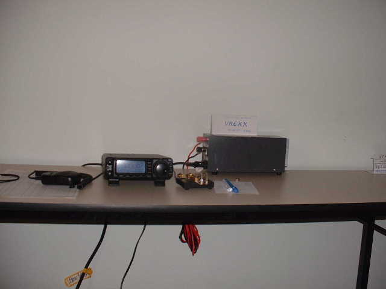
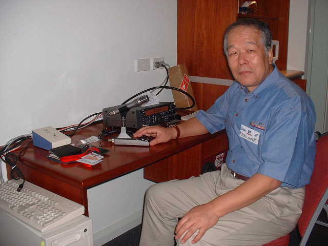
VI6SWAとVK6KKの6mの運用に使われたFT-100(100W)とVI6SWAのHFデスクで。RIGはTS-570
 |
SEANET 2002 |